ClusterMap is designed to analyze and compare two or more single cell expression datasets. ClusterMap suppose that the analysis for each single dataset and combined dataset are done. If not, the package also provides quick analysis function "make_single_obj" and "make_comb_obj" to generate Seurat object.
The pre-analysis for the following datasets is here: pre_analysis/pre_analysis.html
The epithelial cell datasets were generated in the study of Pal B, et al.(https://www.nature.com/articles/s41467-017-01560-x). Cells were collected from mammary glands of adult mice at different phases of the estrus cycle. By pooling the glands from two mice, scRNA-seq of 2729 total epithelial cells in estrus and 2439 cells in diestrus were performed using the 10X Chromium platform.
Pre-analysis by Seruat
Analysis were performed with Seruat package. 13 sub-groups of diestrus stage cells and 10 sub-groups of estrus stage cells were defined, as well as the maker genes of each group.
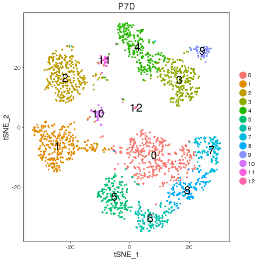 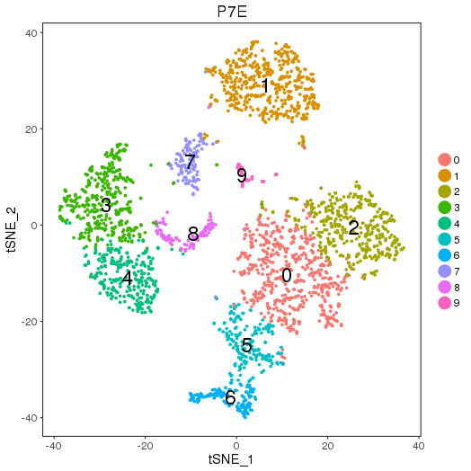
First, use a list of marker genes of each sub-group in each sample to map sub-groups across samples.
The marker gene file can be the direct output of "FindAllMarkers" of Seruat package,
or can be a table with columns of "cluster" and "gene".
The "edge_cutoff" can be adjust to decide if a singleton should be merged with a paired groups or not.
See "2.2 More options"
library(ClusterMap) marker_file_list <- c(p7d = 'pre_analysis/p7d.markers.csv', p7e = 'pre_analysis/p7e.markers.csv') res <- cluster_map(marker_file_list, edge_cutoff = 0.1, output = 'p7') res
By calling "cluster_map", the mapped sub-groups information can be generate as the following figures and table. They are auto-saved.
Cluster match
Hierachical clustering:
The sub-groups were matched by hierarchical clustering.
The distance between the sub-groups across the samples were determined by the existence of the marker genes in each group.
The union of all marker genes were considered together.
The sub-groups of each sample were clustered by the averaged binary distance of the existence of the marker genes.
The similarity of the matched groups is defined as 1 minus the height of the merging node of the matched groups in the dendragram.
Tree cut:
We search through all the nodes in the dendragram from the bottom. If all the offspring nodes of a node are from the same sample, the node is considered as a pure node. For a given node N with two direct sub-nodes n1 and n2, N will be kept only under three conditions:
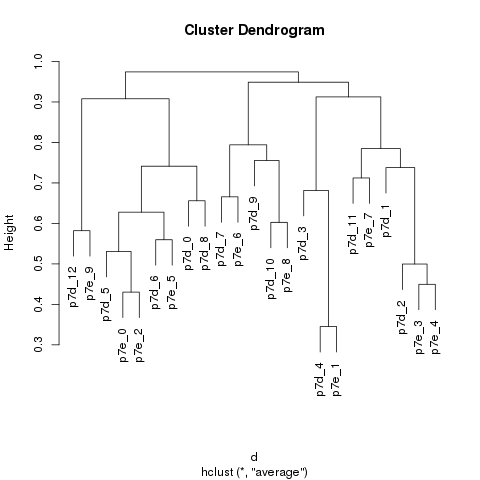 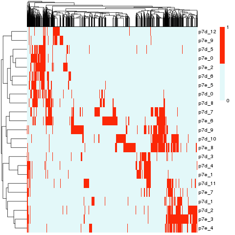
Cluster match results were saved as file p7.cluster.map.csv . The contents are
| n | p7d | p7e | similarity | regroup |
| 1 | p7d_4 | p7e_1 | 0.65 | 1 |
| 2 | p7d_2 | p7e_3;p7e_4 | 0.5 | 2 |
| 3 | p7d_5 | p7e_0;p7e_2 | 0.47 | 3 |
| 4 | p7d_6 | p7e_5 | 0.44 | 4 |
| 5 | p7d_12 | p7e_9 | 0.42 | 5 |
| 6 | p7d_10 | p7e_8 | 0.4 | 6 |
| 7 | p7d_0;p7d_8 | NA | 0.34 | 7 |
| 8 | p7d_7 | p7e_6 | 0.33 | 8 |
| 9 | p7d_11 | p7e_7 | 0.29 | 9 |
| 10 | p7d_1 | NA | NA | 10 |
| 11 | p7d_3 | NA | NA | 11 |
| 12 | p7d_9 | NA | NA | 12 |
Further more, besides the marker gene list, if the Seurat object of sinlge dataset and combined dataset are provided, the full analysis can be done.
marker_file_list <- c(p7d = 'pre_analysis/p7d.markers.csv', p7e = 'pre_analysis/p7e.markers.csv') fList <- c(p7d = 'pre_analysis/p7d.RDS', p7e = 'pre_analysis/p7e.RDS', p7 = 'pre_analysis/p7.RDS') objList <- lapply(fList, readRDS) single_obj_list <- c(p7d = objList$p7d, p7e = objList$p7e) res <- cluster_map(marker_file_list, edge_cutoff = 0.1, output = 'p7', single_obj_list = single_obj_list, comb_obj = objList$p7) res
By calling "cluster_map" this way, Circos plot, re-colored t-SNE plot will be generated as following. As well as the cell percentage change and sample separability of each new group.
Circos plot and population size
To visualized the results, we use Circos plot to summarize.
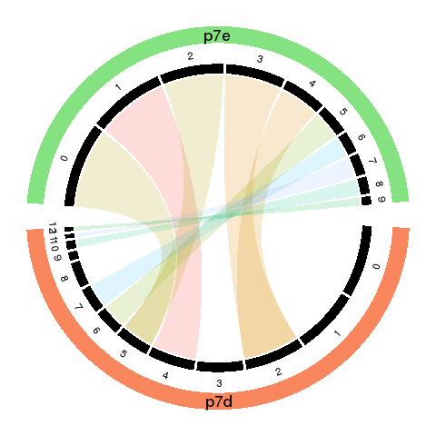
Recolor
For easy comparison, each sample and combined sample are recolored by their new groups after matching under t-SNE coordinates in the pre-analysis. Cells belonging to the same new group in different samples are recolored in the same color. Thus, some samples may miss one or more colors, which means no such group in the sample. New groups will be saved as a list into RDS file, which can be used later.
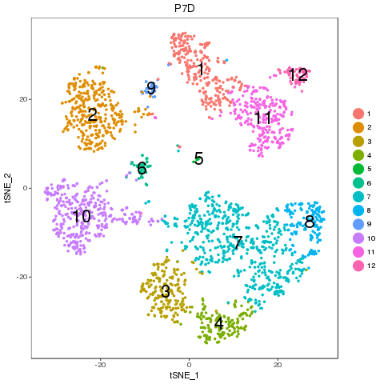 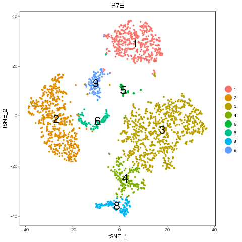
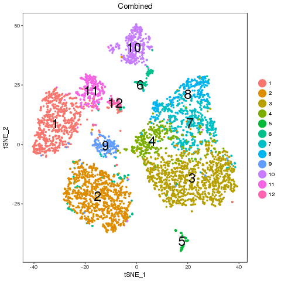 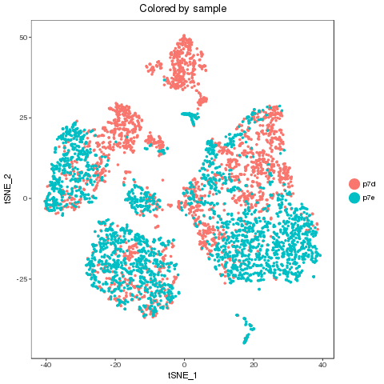
Separability
After matching and regrouping, we estimate the condition effect on each paired groups besides the percentage change. To quantify the difference between paired groups, separability was calculated for each new group. Separability will be generated pairwise if more than two samples.
For each new group, the separability is defined as the median difference of inna- and inter- sample distance of each cell in the combined t-SNE coordinates. The inna-sample distance is defined as the median distance of K-nearest cells of the same sample. Defualt K=5. The inter-sample distance is the same but cells of different sample.
Using median instead of mean will reduce the variation due to the outliners. The higher the more separable.
Map results
From the following results, we see that new group 2 and 4 are one to multiple match. There is no matched groups for the new group 8, 10, 11, 12 at current cutoff. Both circos plot and recolored t-SNE plot showed the cell percentage change of the group 2, 4 and 9. The separability of each new group further emerged the most affected sub-types, such as group 5, 7 and 4, besides the no matched groups.
The full results were saved as in file p7.results.csv
| n | p7d | p7e | similarity | regroup | p7d_cell_perc | p7e_cell_perc | p7d.vs.p7e_separability |
| 1 | p7d_4 | p7e_1 | 0.65 | 1 | 0.11 | 0.18 | 0.85 |
| 2 | p7d_2 | p7e_3;p7e_4 | 0.5 | 2 | 0.14 | 0.14;0.1 | 0.34 |
| 3 | p7d_5 | p7e_0;p7e_2 | 0.47 | 3 | 0.08 | 0.2;0.15 | 2.93 |
| 4 | p7d_6 | p7e_5 | 0.44 | 4 | 0.06 | 0.07 | 0.99 |
| 5 | p7d_12 | p7e_9 | 0.42 | 5 | 0.01 | 0.02 | 0.03 |
| 6 | p7d_10 | p7e_8 | 0.4 | 6 | 0.02 | 0.04 | 10.56 |
| 7 | p7d_0;p7d_8 | NA | 0.34 | 7 | 0.17;0.06 | NA | Inf |
| 8 | p7d_7 | p7e_6 | 0.33 | 8 | 0.06 | 0.05 | 7.13 |
| 9 | p7d_11 | p7e_7 | 0.29 | 9 | 0.01 | 0.05 | 0.53 |
| 10 | p7d_1 | NA | NA | 10 | 0.15 | NA | Inf |
| 11 | p7d_3 | NA | NA | 11 | 0.11 | NA | Inf |
| 12 | p7d_9 | NA | NA | 12 | 0.02 | NA | Inf |
Core basal genes: Krt14, Acta2, Myl9, Sparc, Mylk, Cxcl14 – group 3, 4, 7, 8
Luminal genes: Elf5, Prlr, Areg, Ly6d, Stc2, Krt19 – group 1, 11, 12, 9
ML cell-specific genes: Prlr, Cited1, Esrrb, and Cxcl15 – group 2, 5, 6, 10
library(Seurat) FeaturePlot(object = objList$p7d, features.plot = c("Krt14", "Acta2", "Elf5", "Prlr", "Krt19","Pgr"), cols.use = c("grey", "blue"), reduction.use = "tsne") savePlot('feature.gene.p7d.png') FeaturePlot(object = objList$p7e, features.plot = c("Krt14", "Acta2", "Elf5", "Prlr", "Krt19","Pgr"), cols.use = c("grey", "blue"), reduction.use = "tsne") savePlot('feature.gene.p7e.png')
P7D
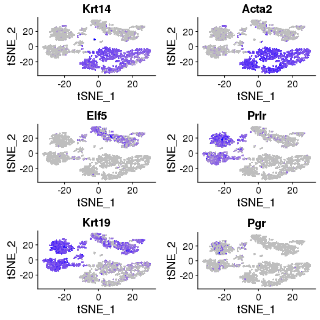
P7E
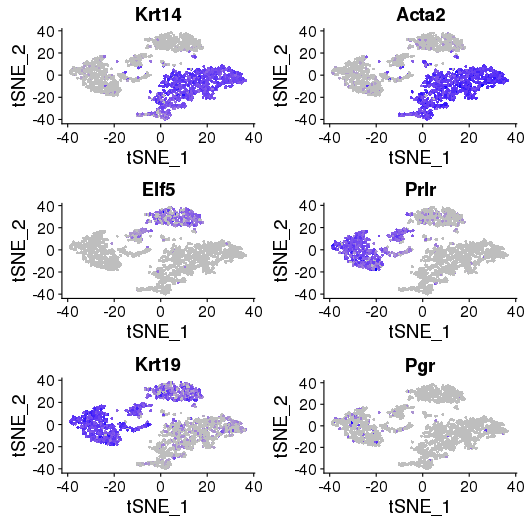
library(Seurat) new.group.list <- readRDS('p7.new.group.list.rds') names(new.group.list) ## [1] "p7d" "p7e" "comb" p7 <- objList$p7 p7@ident <- new.group.list$comb TSNEPlot(object = p7, do.label = T, label.size = 6) p7.markers <- FindAllMarkers(object = p7, only.pos = TRUE, min.pct = 0.25, thresh.use = 0.25) write.csv(p7.markers, file = 'p7.new.group.markers.csv') ## p7.markers.10.vs.12 <- FindMarkers(object = p7, ident.1 = '10',ident.2 = '2', only.pos = F, min.pct = 0.25, min.diff.pct = 0.1, thresh.use = 0.25) ## write.csv(p7.markers.10.vs.12,file = 'p7.markers.10.vs.12.csv')
To custermized the analysis, step by step analysis could be performed.
The cutoff is the edge length cutoff for deciding if a singleton should be merged or not. We suggest the cutoff is better to be less than 0.2.
marker_file_list <- c(p7d = 'pre_analysis/p7d.markers.csv', p7e = 'pre_analysis/p7e.markers.csv') ## cutoff 0.1 mapRes <- cluster_map_by_marker(marker_file_list, cutoff = 0.1, output = 'p7') ## cutoff 0.15 mapRes <- cluster_map_by_marker(marker_file_list, cutoff = 0.15, output = 'p7_cutoff0.15') mapRes ## results didn't change. ## cutoff 0.2 mapRes <- cluster_map_by_marker(marker_file_list, cutoff = 0.2, output = 'p7_cutoff0.2') mapRes ## p7d_9 was grouped together with p7d_10 and p7e_8.
cutoff = 0.2
| n | p7d | p7e | similarity | regroup |
| 1 | p7d_4 | p7e_1 | 0.65 | 1 |
| 2 | p7d_2 | p7e_3;p7e_4 | 0.50 | 2 |
| 3 | p7d_5 | p7e_0;p7e_2 | 0.47 | 3 |
| 4 | p7d_6 | p7e_5 | 0.44 | 4 |
| 5 | p7d_12 | p7e_9 | 0.42 | 5 |
| 6 | p7d_0;p7d_8 | NA | 0.34 | 6 |
| 7 | p7d_7 | p7e_6 | 0.33 | 7 |
| 8 | p7d_11 | p7e_7 | 0.29 | 8 |
| 9 | p7d_10;p7d_9 | p7e_8 | 0.24 | 9 |
| 10 | p7d_1 | NA | NA | 10 |
| 11 | p7d_3 | NA | NA | 11 |
The cell numbers for each sub-group can be pulled out from Seruat object or provided by the user. cell_num_list is a list of vectors for each sample. Each vector contains the cell numbers for each sub-group of the sample.
fList <- c(p7d = 'pre_analysis/p7d.RDS', p7e = 'pre_analysis/p7e.RDS') objList <- lapply(fList, readRDS) single_obj_list <- c(p7d = objList$p7d, p7e = objList$p7e) cell_num_list <- lapply(single_obj_list, function(obj) summary(obj@ident)) mapRes <- read.csv('p7.results.csv') ## This file was auto-saved when cluster_map_by_marker function was run. circos_map(mapRes, cell_num_list, output = 'p7') res <- add_perc(mapRes, cell_num_list) res
Number of samples in circos plot
If there are more than 3 samples, the circos plot will become complicated. We can choose a subset of samples to plot. To achieve this, just remove extra samples from the mapRes and cell_num_list variables. Then use circos_map to plot a subset.
fList <- c(p7d = 'pre_analysis/p7d.RDS', p7e = 'pre_analysis/p7e.RDS') objList <- lapply(fList, readRDS) single_obj_list <- c(p7d = objList$p7d, p7e = objList$p7e) cell_num_list <- lapply(single_obj_list, function(obj) summary(obj@ident)) mapRes <- read.csv('p7.results.csv')## This file was auto-saved when cluster_map_by_marker function was run. library(RColorBrewer) circos_map(mapRes, cell_num_list, output = 'p7.tmp', color_cord = brewer.pal(n = 12, 'Paired'))
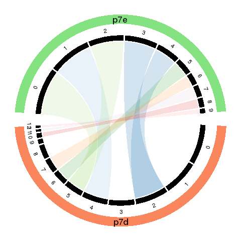
p7d <- readRDS('pre_analysis/p7d.RDS') mapRes <- read.csv('p7.results.csv') ## This file was auto-saved when cluster_map_by_marker function was run. mapRes da <- structure(as.vector(mapRes[, 'p7d']), names = mapRes$regroup) head(da) p7d.new.group <- recolor_s(da, obj = p7d, output = 'p7d') ## new group asignment of each cell is outputed as well. ## custermized color library(RColorBrewer) p7d.new.group <- recolor_s(da, obj = p7d, output = 'p7d.tmp', color = brewer.pal(n = 12, 'Paired')) p7e <- readRDS('pre_analysis/p7e.RDS') da <- structure(as.vector(mapRes[, 'p7e']), names = mapRes$regroup) head(da) p7e.new.group <- recolor_s(da, obj = p7e, output = 'p7e') ## new group asignment of each cell is outputed as well. ## custermized color p7e.new.group <- recolor_s(da, obj = p7e, output = 'p7e.tmp', color = brewer.pal(n = 12, 'Paired'))
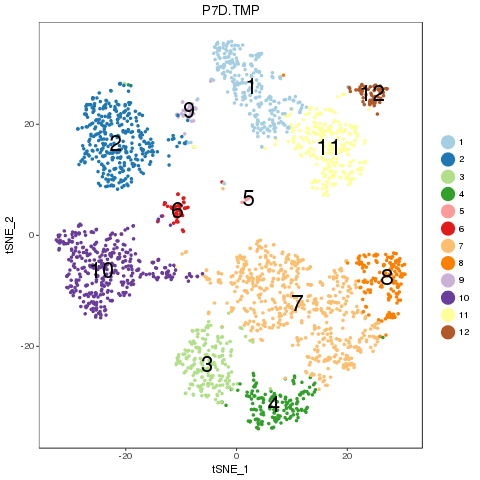 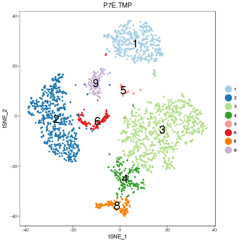
p7 <- readRDS('pre_analysis/p7.RDS') new_group_comb <- recolor_comb(comb_obj = p7, new_group_list = list(p7d = p7d.new.group, p7e = p7e.new.group), output = 'p7', comb_delim = '-') ## new group list generated by recolor_s as in the previous code block. ## custermized color library(RColorBrewer) new_group_comb <- recolor_comb(comb_obj = p7, new_group_list = list(p7d = p7d.new.group, p7e = p7e.new.group), output = 'p7.tmp', comb_delim = '-', color = brewer.pal(n = 12, 'Paired'))
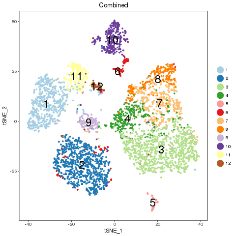
p7 <- readRDS('pre_analysis/p7.RDS') tsne_coord <- as.data.frame(p7@dr$tsne@cell.embeddings) new_group_list <- readRDS('p7.new.group.list.RDS') group <- new_group_list$comb head(group) sample_label <- as.factor(sub('-.*', '', names(group))) ## k=5 sepa_k5 <- separability_pairwise(tsne_coord, group, sample_label, k = 5) sepa_k5 ## k=10 sepa_k10 <- separability_pairwise(tsne_coord, group, sample_label, k = 10) sepa_k10
k = 5
| regroup | p7d.vs.p7e |
| 1 | 0.85 |
| 2 | 0.34 |
| 3 | 2.93 |
| 4 | 0.99 |
| 5 | 0.03 |
| 6 | 10.56 |
| 7 | Inf |
| 8 | 7.13 |
| 9 | 0.53 |
| 10 | Inf |
| 11 | Inf |
| 12 | Inf |
k = 10
| regroup | p7d.vs.p7e |
| 1 | 0.98 |
| 2 | 0.42 |
| 3 | 3.75 |
| 4 | 1.00 |
| 5 | -0.38 |
| 6 | 11.43 |
| 7 | Inf |
| 8 | 7.71 |
| 9 | 0.99 |
| 10 | Inf |
| 11 | Inf |
| 12 | Inf |
The dataset comes from this study: https://www.nature.com/articles/nbt.4042
A pool of peripheral blood mononuclear cells (PBMCs) from eight lupus patients was studied. PBMCs from each patient were untreated as control or activated with recombinant interferon-beta IFN-beta for 6 hours. 14,619 cells for control and 14,446 cells for stimulated were obtained from 10X Chromium instrument sequencing.
Pre-analysis by Seruat
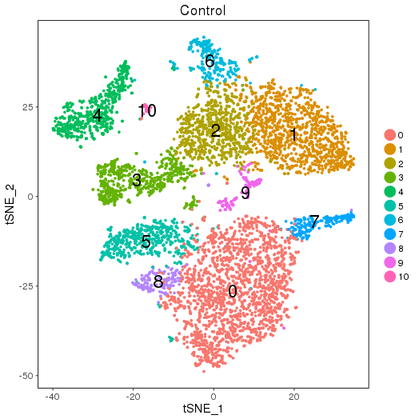 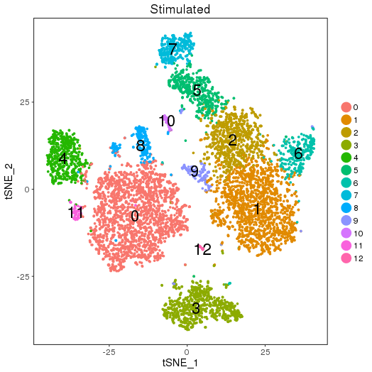
ClusterMap analysis
library(ClusterMap) marker_file_list <- c(ctrl = 'pre_analysis/ctrl.markers.csv', stim = 'pre_analysis/stim.markers.csv') fList <- c(ctrl = "pre_analysis/ctrl.RDS", stim = "pre_analysis/stim.RDS", comb = "pre_analysis/immune.RDS") immuneList <- lapply(fList, readRDS) single_obj_list <- c(ctrl = immuneList$ctrl, stim = immuneList$stim) res <- cluster_map(marker_file_list, edge_cutoff = 0.1, output = 'immune', single_obj_list = single_obj_list, comb_obj = immuneList$comb) res
Cluster match
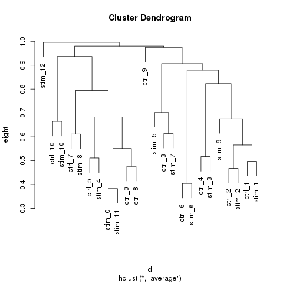 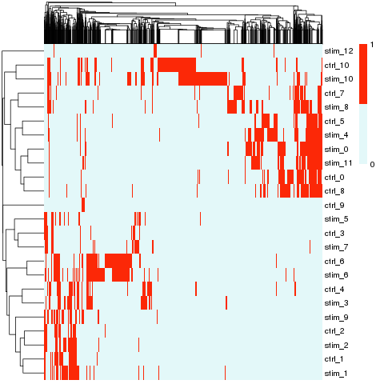
Circos plot
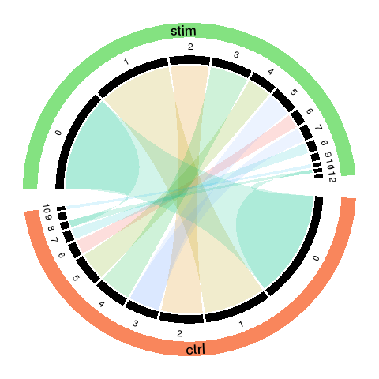
Recolor
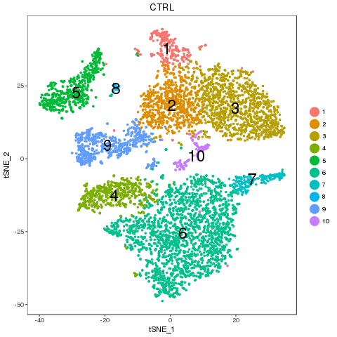 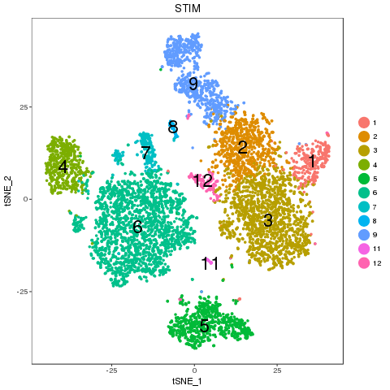
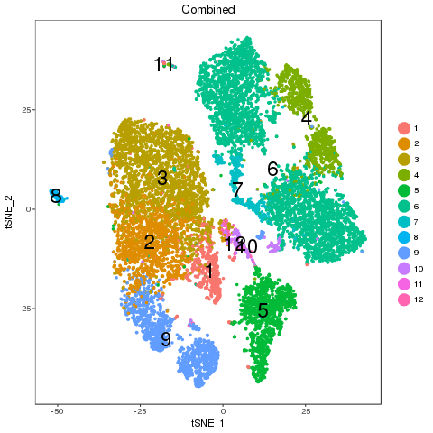 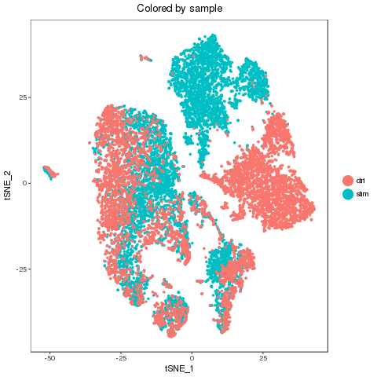
Map results
| n | ctrl | stim | similarity | regroup | ctrl_cell_perc | stim_cell_perc | ctrl.vs.stim_separability |
| 1 | ctrl_6 | stim_6 | 0.6 | 1 | 0.04 | 0.04 | 0.24 |
| 2 | ctrl_2 | stim_2 | 0.53 | 2 | 0.12 | 0.11 | 0.55 |
| 3 | ctrl_1 | stim_1 | 0.5 | 3 | 0.18 | 0.21 | 0.78 |
| 4 | ctrl_5 | stim_4 | 0.49 | 4 | 0.08 | 0.07 | 5.01 |
| 5 | ctrl_4 | stim_3 | 0.48 | 5 | 0.09 | 0.11 | 0.55 |
| 6 | ctrl_0;ctrl_8 | stim_0;stim_11 | 0.45 | 6 | 0.31;0.02 | 0.28;0.01 | 11.03 |
| 7 | ctrl_7 | stim_8 | 0.39 | 7 | 0.03 | 0.03 | 7.05 |
| 8 | ctrl_10 | stim_10 | 0.34 | 8 | 0.01 | 0.01 | 0.55 |
| 9 | ctrl_3 | stim_5;stim_7 | 0.3 | 9 | 0.09 | 0.07;0.04 | 0.37 |
| 10 | ctrl_9 | NA | NA | 10 | 0.02 | NA | Inf |
| 11 | NA | stim_12 | NA | 11 | NA | 0 | Inf |
| 12 | NA | stim_9 | NA | 12 | NA | 0.02 | Inf |
Cell type and Known markers
cM, CD14+CD16- monocytes: CD14, LYZ — group 6
ncM, CD14+CD16+ monocytes: FCGR3A, MS4A7 — group 4
DC, dendritic cells: FCER1A, CST3 — group 7
Mkc, megakaryocytes: PPBP — group 10, 12
Th, CD4+ T cells: IL7R — group 2, 3
B, B cells: MS4A1 — group 5
Tc, CD8+ T cells: CD8A — group 9
NK, natural killer cells: GNLY, NKG7 — group 9
library(Seurat) FeaturePlot(object = immuneList$ctrl, features.plot = c("CD14","LYZ","FCGR3A","MS4A7","FCER1A","CST3","PPBP","IL7R","MS4A1","CD8A","GNLY","NKG7"), cols.use = c("grey", "blue"), reduction.use = "tsne") savePlot('feature.gene.ctrl.png') FeaturePlot(object = immuneList$stim, features.plot = c("CD14","LYZ","FCGR3A","MS4A7","FCER1A","CST3","PPBP","IL7R","MS4A1","CD8A","GNLY","NKG7"), cols.use = c("grey", "blue"), reduction.use = "tsne") savePlot('feature.gene.stim.png') ## FeaturePlot(object = all, features.plot = c("CD4","TBX21",'GATA3','SELL','CREM'), cols.use = c("grey", "blue"), reduction.use = "tsne") ## savePlot('features.immune.png')
Control
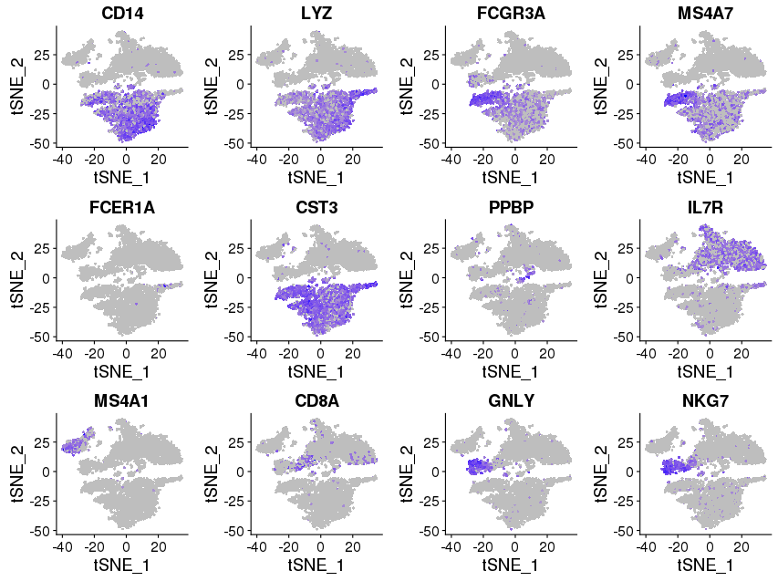
Stimulated
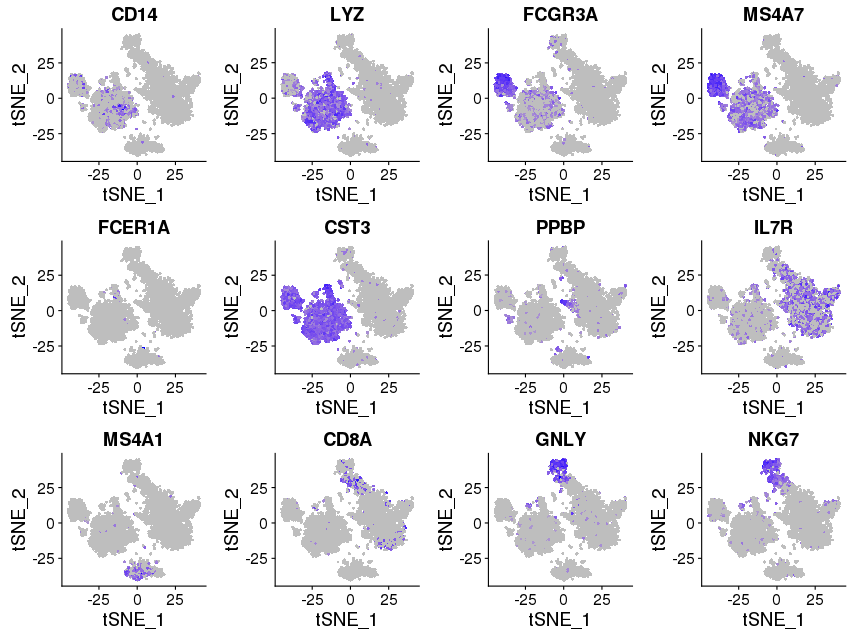
The dataset is downloaded from 10X Genomics single cell gene expression datasets:
https://support.10xgenomics.com/single-cell-gene-expression/datasets/2.1.0/pbmc4k
https://support.10xgenomics.com/single-cell-gene-expression/datasets/2.1.0/pbmc8k
They are peripheral blood mononuclear cells (PBMCs) from the same healthy donor.
Pre-analysis
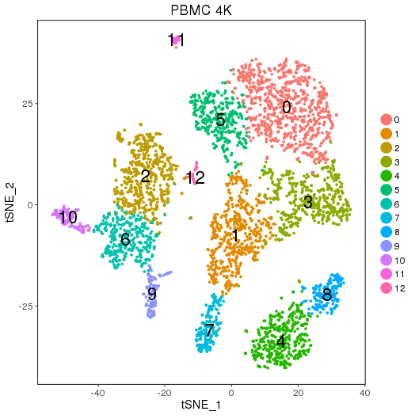 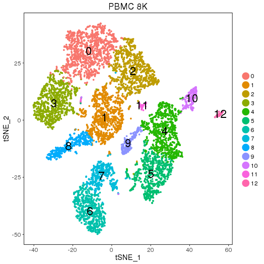
ClusterMap analysis
library(ClusterMap) marker_file_list <- c(pbmc4k = 'pre_analysis/pbmc4k.markers.csv', pbmc8k = 'pre_analysis/pbmc8k.markers.csv') fList <- c(pbmc4k = 'pre_analysis/pbmc4k.RDS', pbmc8k = 'pre_analysis/pbmc8k.RDS', pbmc = "pre_analysis/pbmc.RDS") pbmcList <- lapply(fList, readRDS) single_obj_list <- c(pbmc4k = pbmcList$pbmc4k, pbmc8k = pbmcList$pbmc8k) res <- cluster_map(marker_file_list, edge_cutoff = 0.1, output = 'pbmc', single_obj_list = single_obj_list, comb_obj = pbmcList$pbmc) res ## marker genes library(Seurat) FeaturePlot(object = pbmcList$pbmc4k, features.plot = c("CD14","LYZ","FCGR3A","MS4A7","FCER1A","CST3","PPBP","IL7R","MS4A1","CD8A","GNLY","NKG7"), cols.use = c("grey", "blue"), reduction.use = "tsne") savePlot('feature.gene.pbmc4k.png') FeaturePlot(object = pbmcList$pbmc8k, features.plot = c("CD14","LYZ","FCGR3A","MS4A7","FCER1A","CST3","PPBP","IL7R","MS4A1","CD8A","GNLY","NKG7"), cols.use = c("grey", "blue"), reduction.use = "tsne") savePlot('feature.gene.pbmc8k.png') ## FeaturePlot(object = pbmcList$pbmc, features.plot = c("CD14","LYZ","FCGR3A","MS4A7","FCER1A","CST3","PPBP","IL7R","MS4A1","CD8A","GNLY","NKG7"), cols.use = c("grey", "blue"), reduction.use = "tsne") ## savePlot('feature.gene.pbmc.png')
Cluster match
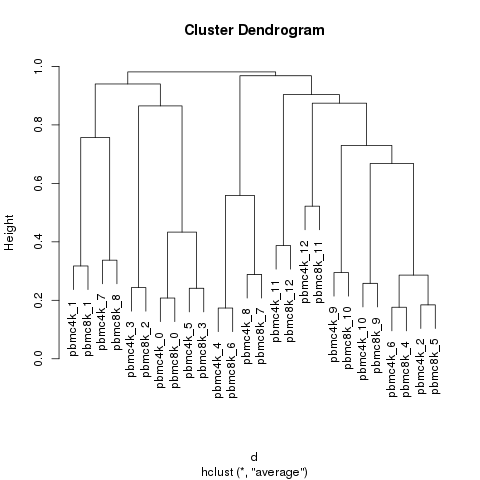 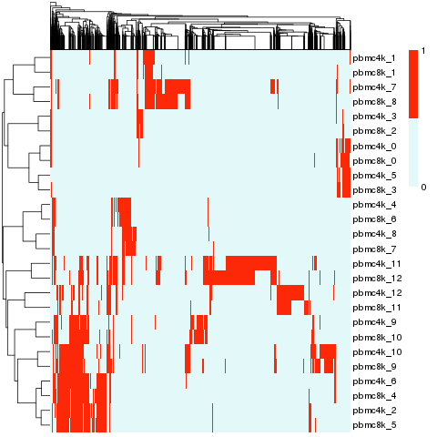
Circos plot
The cord color in the circos plot is much darker, indicating the high similarity of the matched groups.
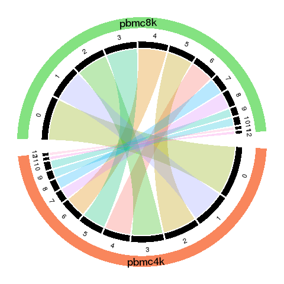
Recolor
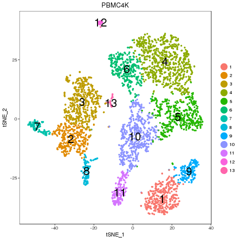 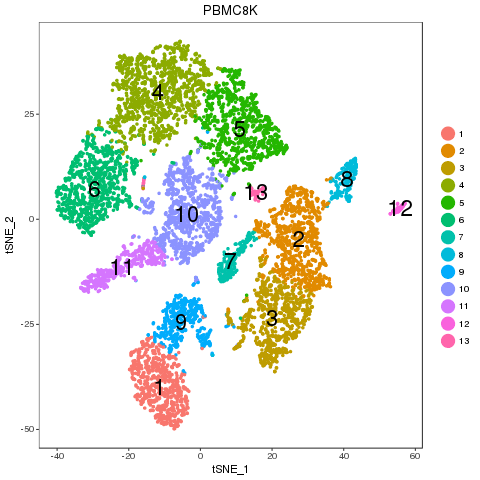
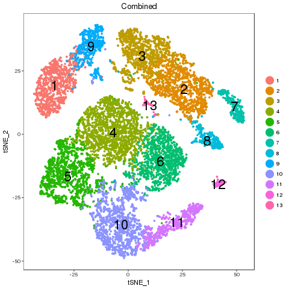 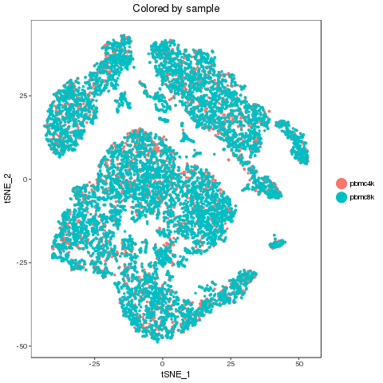
Map results
Clear one-to-one match. Majority of the cell percentage of sub-types are not changed. The separability shows that there is no obvious difference between the two samples in any of the matched pairs.
| n | pbmc4k | pbmc8k | similarity | regroup | pbmc4k_cell_perc | pbmc8k_cell_perc | pbmc4k.vs.pbmc8k_separability |
| 1 | pbmc4k_4 | pbmc8k_6 | 0.83 | 1 | 0.1 | 0.09 | -0.09 |
| 2 | pbmc4k_6 | pbmc8k_4 | 0.82 | 2 | 0.08 | 0.11 | 0.03 |
| 3 | pbmc4k_2 | pbmc8k_5 | 0.82 | 3 | 0.13 | 0.1 | -0.01 |
| 4 | pbmc4k_0 | pbmc8k_0 | 0.79 | 4 | 0.19 | 0.16 | -0.02 |
| 5 | pbmc4k_3 | pbmc8k_2 | 0.76 | 5 | 0.12 | 0.12 | -0.08 |
| 6 | pbmc4k_5 | pbmc8k_3 | 0.76 | 6 | 0.09 | 0.12 | -0.07 |
| 7 | pbmc4k_10 | pbmc8k_9 | 0.74 | 7 | 0.03 | 0.03 | -0.08 |
| 8 | pbmc4k_9 | pbmc8k_10 | 0.71 | 8 | 0.03 | 0.03 | -0.01 |
| 9 | pbmc4k_8 | pbmc8k_7 | 0.71 | 9 | 0.04 | 0.06 | 0.05 |
| 10 | pbmc4k_1 | pbmc8k_1 | 0.68 | 10 | 0.13 | 0.12 | -0.08 |
| 11 | pbmc4k_7 | pbmc8k_8 | 0.66 | 11 | 0.04 | 0.06 | 0.05 |
| 12 | pbmc4k_11 | pbmc8k_12 | 0.61 | 12 | 0.01 | 0.01 | -0.08 |
| 13 | pbmc4k_12 | pbmc8k_11 | 0.48 | 13 | 0.01 | 0.01 | -0.02 |
Known markers
PBMC4K
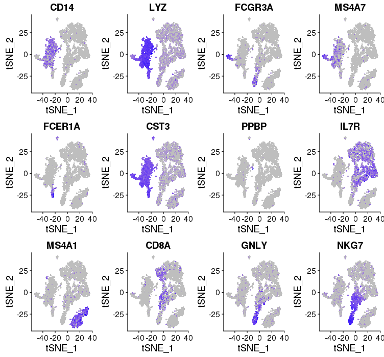
PBMC8K
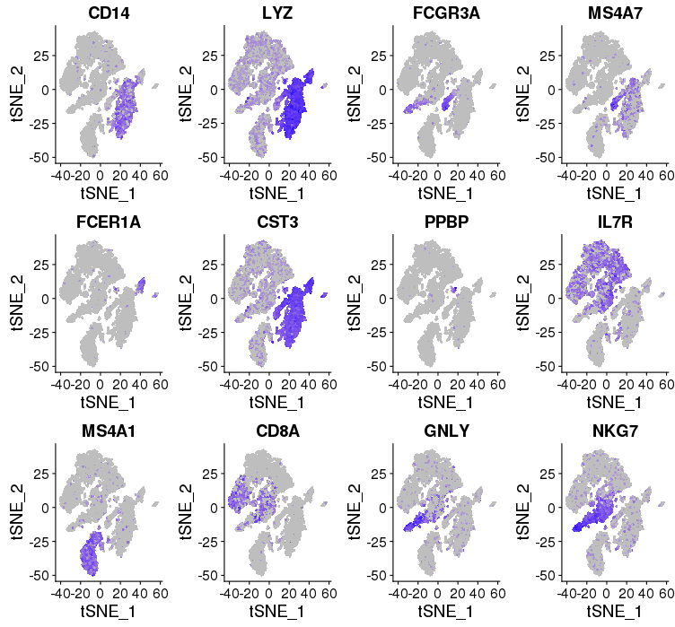
We generate a random tree with 4 samples and 10 sub-groups in each sample to test our tree cut algorithm.
library(ape) set.seed(1) tree <- rcoal(40, tip.label = paste0(c('A', 'B', 'C', 'D'), '_', rep(1:10, each = 4)), br = runif(80, min = 0, max = 0.02)) ## plot(tree, edge.width = 2, label.offset = 0.01) ## nodelabels() ## tiplabels() ## axisPhylo(side = 1) saveRDS(tree, file = 'simulated.tree.RDS') hc = as.hclust.phylo(tree) png('simulated.tree.png') plot(hc) dev.off() res <- purity_cut(hc, cutoff = 0.1) write.csv(res, file = 'simulated.c0.1.results.csv') res <- purity_cut(hc, cutoff = 0.2) write.csv(res, file = 'simulated.c0.2.results.csv')
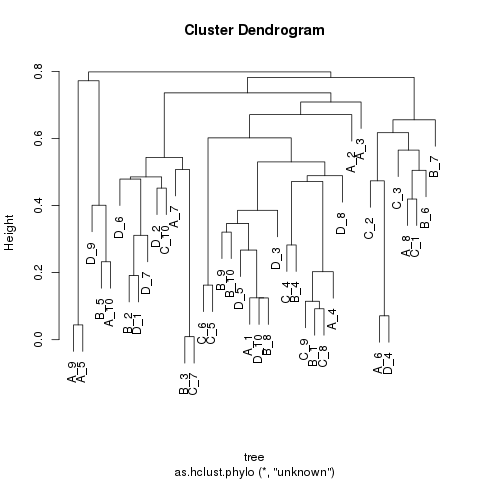
cutoff = 0.1
| n | A | B | C | D | similarity | regroup |
| 1 | NA | B_3 | C_7 | NA | 0.99 | 1 |
| 2 | A_9;A_5 | NA | NA | NA | 0.96 | 2 |
| 3 | A_6 | NA | NA | D_4 | 0.93 | 3 |
| 4 | A_1 | B_8 | NA | D_10 | 0.88 | 4 |
| 5 | NA | NA | C_6;C_5 | NA | 0.84 | 5 |
| 6 | NA | B_2 | NA | D_1 | 0.81 | 6 |
| 7 | A_4 | B_1 | C_9;C_8 | NA | 0.8 | 7 |
| 8 | A_10 | B_5 | NA | NA | 0.77 | 8 |
| 9 | NA | B_4 | C_4 | NA | 0.72 | 9 |
| 10 | NA | B_9;B_10 | NA | NA | 0.68 | 10 |
| 11 | NA | NA | C_10 | D_2 | 0.55 | 11 |
| 12 | A_8 | B_6 | C_3;C_1 | NA | 0.43 | 12 |
| 13 | NA | NA | NA | D_9 | NA | 13 |
| 14 | NA | NA | NA | D_6 | NA | 14 |
| 15 | NA | NA | NA | D_7 | NA | 15 |
| 16 | A_7 | NA | NA | NA | NA | 16 |
| 17 | NA | NA | NA | D_5 | NA | 17 |
| 18 | NA | NA | NA | D_3 | NA | 18 |
| 19 | NA | NA | NA | D_8 | NA | 19 |
| 20 | A_2 | NA | NA | NA | NA | 20 |
| 21 | A_3 | NA | NA | NA | NA | 21 |
| 22 | NA | NA | C_2 | NA | NA | 22 |
| 23 | NA | B_7 | NA | NA | NA | 23 |
cutoff = 0.2
| n | A | B | C | D | similarity | regroup |
| 1 | NA | B_3 | C_7 | NA | 0.99 | 1 |
| 2 | A_9;A_5 | NA | NA | NA | 0.96 | 2 |
| 3 | A_6 | NA | NA | D_4 | 0.93 | 3 |
| 4 | NA | NA | C_6;C_5 | NA | 0.84 | 4 |
| 5 | A_4 | B_1 | C_9;C_8 | NA | 0.8 | 5 |
| 6 | NA | B_4 | C_4 | NA | 0.72 | 6 |
| 7 | A_1 | B_9;B_10;B_8 | NA | D_5;D_10;D_3 | 0.61 | 7 |
| 8 | A_10 | B_5 | NA | D_9 | 0.6 | 8 |
| 9 | NA | B_2 | C_10 | D_6;D_1;D_7;D_2 | 0.51 | 9 |
| 10 | A_8 | B_6 | C_3;C_1 | NA | 0.43 | 10 |
| 11 | A_7 | NA | NA | NA | NA | 11 |
| 12 | NA | NA | NA | D_8 | NA | 12 |
| 13 | A_2 | NA | NA | NA | NA | 13 |
| 14 | A_3 | NA | NA | NA | NA | 14 |
| 15 | NA | NA | C_2 | NA | NA | 15 |
| 16 | NA | B_7 | NA | NA | NA | 16 |
R version 3.4.3 (2017-11-30)
Seurat_2.2.1